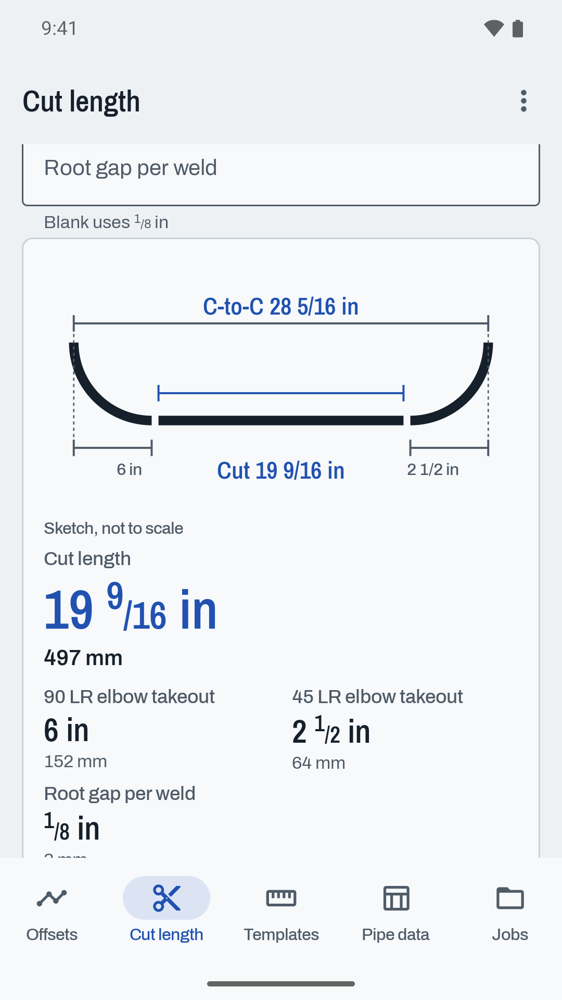
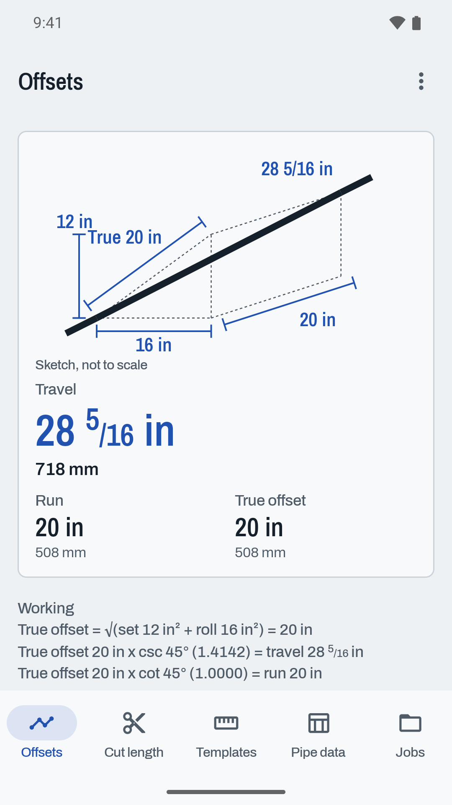
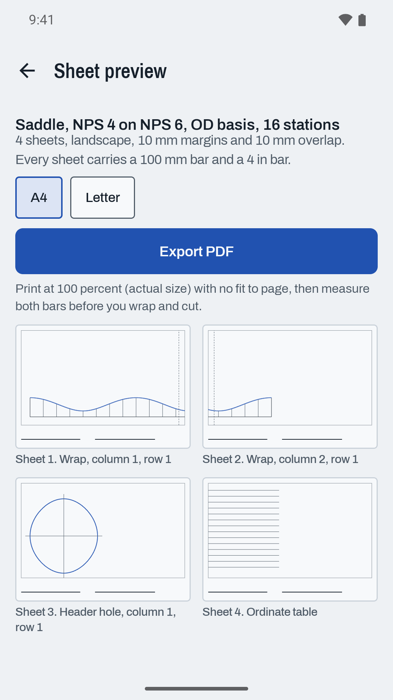

The pipe fitter's calculator that shows its working, on the phone in your pocket, with no signal.
USD 4.99, one time Get it on Google Play One price. No ads, no subscription, no account. Works fully offline.Pick the fitting at each end, the size and the centre to centre, and read the cut with every subtraction listed: both takeouts and one root gap per weld. Butt-weld fittings to ASME B16.9, socket-weld fittings to ASME B16.11 Class 3000 with the engagement gap, and cut elbows at any angle with their arc marks.

Simple offsets at 11.25, 22.5, 30, 45, 60 or any angle. Rolling offsets from set and roll, or the angle solved from a fixed run. Parallel offsets for lines on a rack. Every answer sits on a dimensioned sketch with the arithmetic underneath, in millimetres and fractional inches at once.

Miter elbows from two to five pieces, saddle branches and laterals from 30 to 89 degrees, with the header hole layout. The PDF tiles across A4 or Letter sheets with overlap marks, and every sheet carries a 100 mm bar and a 4 inch bar. Print at 100 percent with no fit to page, measure the bars, then wrap and trace.

Weldbend and Hackney Ladish. A row only one catalogue lists is left out rather than guessed.
Bonney Forge and Anvil, centre to bottom of socket, with the engagement gap subtracted.
ASME B36.10M and B36.19M walls from Weldbend, Hackney Ladish and Sandvik, weight from the plain end formula.
ASME B16.5 Class 150 and 300 bolt counts, circles and stud lengths from Weldbend and USA Fastener. No torque values.